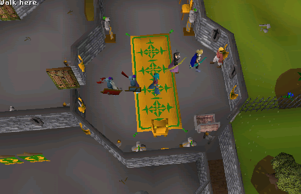
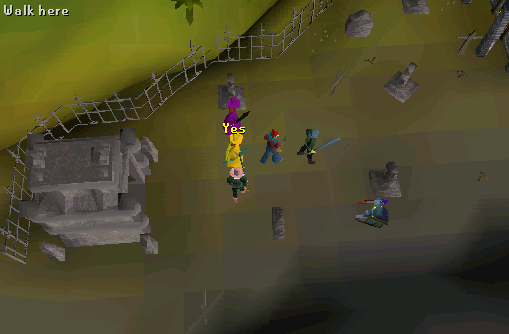
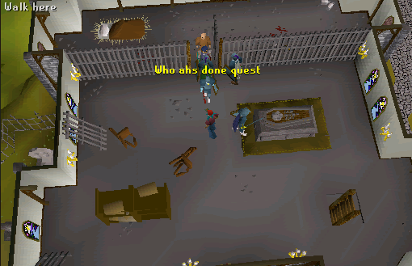
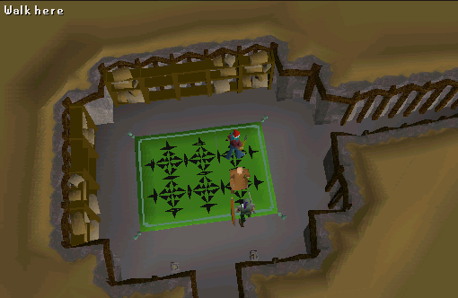

Priest in Peril
Description: Recently contact has been lost with the temple to Saradomin on Misthalins' Eastern border. King Roald would be very interested to know what has caused this lack of communication, and seeks an adventurer willing to report back to him on the situation.Difficulty: Novice
Length: Medium
Required Quests:
- Rune Mysteries
Items & Skills Needed:
- The ability to defeat two level 30 enemies
Reward: 1 Quest point, 1,406 Prayer XP, Wolfbane - a special silver dagger that prevents werewolves from shapeshifting into wolves when attacked, and access to a new town
Instructions:
Start by talking to King Roald in Varrock Palace. He tells you that contact has been lost with the temple and wants you to go and check it out for him.

The temple is located East of the Palace. Open the Gate and follow the trail to the temple. Knock on the door by right clicking on the door and clicking knock on. He will ask you if you will to help him by killing the dog. Tell him you will.

Go down the dungeon entrance that is shown on the map to the north. Kill the Temple guardian Dog in the room.

Here is a picture of the Dungeon:

Go back and knock on the door again. He will act very strange. He suggests you talk to King Roald.
King Roald tells you that the dog was guarding the palace from attack, and he tells you to go back and fix it right away.
Go back to the temple. Kill a lvl 30 Monk of Zamorak. He will drop a golden key.
Go to the 3rd floor and talk to Drezel through cell door. Ask him to tell you about the Holy River. He will tell you how Sardomin made the river unpassable to all who were evil. He says that the river may not protect them again and asks you to help make it protect the lands again. He will tell you to get him out of the cell, incapacitate the vampire, and help fix the holy river.

Go back to the dungeon and go through the gate. Study the monuments. When you find a monument with an iron key in it, trade the golden key for it.
Go back to the Cell and use the iron key on the cell door, then go in the cell and talk to Drezel. He will tell you that he cannot leave with the vampire still there, and tells you that the water of the river might be able to incapictate the vampire.
Go back to the monuments and use a bucket with the well in the middle of them.
Go back to Drezel and use the Water on the vampire. You will find out that the water is not blessed. Talk to Drezel and give the water to him and he will bless it for you.
Use the blessed water on the coffin, and talk to Drezel again. He will tell you that he will meet you down by the monument.
Go back to the monuments and go through the north-east gate. You will find Drezel there. Talk to him. He will tell you that the river has been unblessed. You suggest using rune essence to remove the Zamoraken magic. He tells you it will take 50 rune essence to do it. If you brought the unnoted essence, talk to him again and give it to him.
Note: You MUST bring unnoted essence or he will not accept it.

You have now completed the quest, talk to the priest again and he will tell you about the underworld beyond the rift which will take you to a new land.
Congratulations, Quest Complete!
This quest guide was written by monkeymatt9. Thanks to xxtigurxx, chrisbarker, MuH-K0o0o, trekkie, faigel, and Gnat88 for corrections.
This quest guide was entered into the RuneHQ.com database on Tue, Jun 29, 2004, at 02:09:22 PM by stormer and CJH and was last updated on Tue, Jun 14, 2005, at 01:39:56 PM by Lewt04.